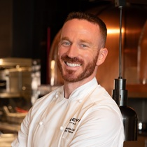

Hover over a staff member's picture below to learn more about them!
| Photo | Name | Title |
|---|---|---|
|
Name
Janice O' Leahy
Job Title
Manager
About Janice
Janice has worked in hospitality and guest services for over 15 years. She enjoys creating a
welcoming environment and making sure both guests and staff have a positive experience. She
is organised, approachable, and enjoys solving problems.
Assists with
|
Janice O'Leahy | Manager |
|
Name
Maurice Smith
Job Title
Concierge
About Maurice
Maurice is friendly, knowledgeable, and always happy to help guests make the most of
their
stay. He has extensive local knowledge and enjoys connecting visitors with attractions,
dining options, and events.
Assists with
|
Maurice Smith | Concierge |
|
Name
Vera Petrova
Job Title
Activities Coordinator
About Vera
Vera is energetic and creative, with a passion for organising engaging activities for guests
of all ages. She enjoys bringing people together through social events, workshops, and
recreational programs.
Assists with
|
Vera Petrova | Activities Coordinator |
|
Name
Reginald Platt
Job Title
Bar Manager
About Reginald
Reginald has a strong background in hospitality and beverage service. Known for his
professionalism and attention to detail, he takes pride in ensuring guests enjoy a relaxing
and enjoyable atmosphere.
Assists with
|
Reginald Platt | Bar Manager |
|

Name
Alexis Garnier
Job Title
Senior Chef
About Alexis
Alexis is an experienced chef who enjoys creating high-quality meals using fresh
ingredients. With a passion for both traditional and modern cuisine, Alexis focuses on
providing memorable dining experiences for guests.
Assists with
|
Alexis Garnier | Senior Chef |